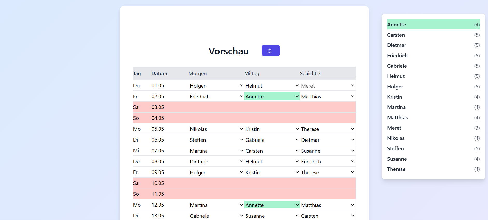

- Kostenlos und ohne Login
- Einfache monatsbasierte Dienstplan-Erstellung
- Unterstützt 2 bis 3 Schichten pro Tag
- Berücksichtigt individuelle Sperrtage oder Sperrschichten
- Vorschau, manuelle Anpassungen und PDF-Export

Quickstart Dienstplaner Pro Tipps & Tricks FAQ Zurück zur Hauptseite